Béghein et al. (1992; §3.3.15) found that Bejan's (1985) scale analysis did not work well in square cavities for Schmidt numbers in the range [0.35, 0.7]. This is understandable, as the analysis is really one-dimensional. In particular, the vertical length scale is taken to be equal to the height of the cavity, 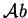. The vertical boundary layers, assuming the parameter values are such that they exist, do not extend over the full height of the walls.
Consider, for definiteness, the hot wall boundary layer when 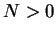. The boundary layer does not begin at the floor, since this region is rather stagnant and the flow there is dominated by viscosity (Luchini 1986). Instead, the `intrusion flow' rises from the floor before being entrained (Patterson 1984). A region of increased pressure exists at the top of the hot wall, which is what causes the flow to turn and flow along the ceiling. This turning does not occur right at the corner, but rather over a finite length of the wall. These considerations indicate that the correct vertical length scale in the vertical boundary layers will generally be slightly less than the cavity height.
In my B.E. thesis (McBain 1995), I suggested that the correction could be made by deducting the length of the corner regions; a rough estimate for these being obtained from the nominal boundary layer thickness. An expression for the speed scale was obtained in terms of the `diffusion thickness' or `conduction thickness' from the usual balance of vertical advection and horizontal diffusion or conduction in the vertical compositional or thermal boundary layer (Gill 1966; Bejan 1995, p. 223). A second expression, in terms of the velocity boundary layer thickness, was obtained from a balance of inertia and buoyancy in the momentum equation; the friction-buoyancy balance recommended by Bejan (1995, p. 223) as `marginally valid for gases ( 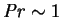)' being rejected in favour of a balance appropriate for low Prandtl and Schmidt numbers. By assuming that the nominal boundary layer thickness was given by the diffusion thickness when calculating mass transfer or the two-dimensional conduction thickness when calculating heat transfer, the speed scale could be eliminated between these two expressions to give a relation between the mean Sherwood or Nusselt number and the boundary conditions 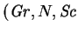 and Pr).
The final relations were contaminated by algebraic errors, which were
detected by Dr Harry Suehrcke (pers. comm., Dec. 1995). Dr Suehrcke
also suggested modifying the analysis by including friction in the
momentum balance (pers. comm., 10 Feb. 1996). This had the effect of giving
the heat transfer result the same asymptotic behaviour at large and small
Prandtl numbers as the formulae of LeFevre (1957), and Berkovsky and Polevikov
(1977). The corrected and modified results,
published in 1997 (McBain 1997b), were:
The formulae are compared with the numerical results of Lin et al. (1990; §3.3.11) and Béghein et al. (1992; §3.3.15) in figures 3.1 and 3.2. The abscissae of these results lie in a much wider range than those on which the proportionality constant was based, so that the curves pictured represent a considerable extrapolation.
The formulae give meaningless results (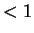) for values of the abscissae below 435 and are not plotted in this range. At such low combined Grashof numbers, there are no distinct boundary layers or diffusion or conduction layers, so that the analysis is invalid.
Mean Nusselt numbers from de Vahl Davis's (1983) bench-mark numerical solutions for the analogous single fluid heat transfer problem 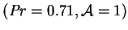 are also included as squares in figure 3.2.
In the above formulae, the mean Sherwood number does not depend on Pr, and 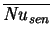 does not depend on Sc. This follows from the assumption that for mass (/heat) transfer, the velocity boundary layer is equal in thickness to the diffusion (/conduction) layer. This is a reasonable approximation only when the Prandtl and Schmidt numbers are comparable and both are less than unity. It is particularly poor, for the heat transfer, for example, if the Schmidt number is larger than unity and the velocity boundary layer is primarily driven by compositional buoyancy. This explains the deviation in figure 3.2 of the four points taken from table 5 of Béghein et al. They correspond to solutions with 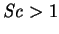 and 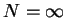. This deviation makes it clear that the combined Grashof number, 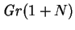, is generally not sufficient to remove the dependence of the overall transfer rates on 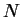.
The numerical solutions used to validate the scale analysis did not use the Boussinesq approximation. Solutions were generated for cavities 50mm wide with a 5K temperature difference. The material properties used were those for air-water vapour. The mean temperature took on the values 10(10)50C and the hot and cold wall relative humidities were set at 0(50)100% relative humidity at 1atm; this gave 45 combinations. Since the results were successfully correlated by the Boussinesq scale analysis summarized above, it was concluded that non-Boussinesq effects are unlikely to be important in building wall cavities. This is one of the reasons for the use of the approximation in the present project.
Amongst the variable properties was the mixture specific heat
capacity. This is inconsistent with the neglect of the interdiffusion energy
flux, as noted on p.  . Unlike in the solutions of
Weaver and Viskanta (1991a, b; §§3.3.12 -
3.3.13) though, the parameter values were such that neither
the variability of the mixture specific heat nor interdiffusion would have
had much effect. Thus, this error probably does not invalidate the results;
a conclusion which could also be obtained by inspection of
figures 3.1 and 3.2.
. Unlike in the solutions of
Weaver and Viskanta (1991a, b; §§3.3.12 -
3.3.13) though, the parameter values were such that neither
the variability of the mixture specific heat nor interdiffusion would have
had much effect. Thus, this error probably does not invalidate the results;
a conclusion which could also be obtained by inspection of
figures 3.1 and 3.2.